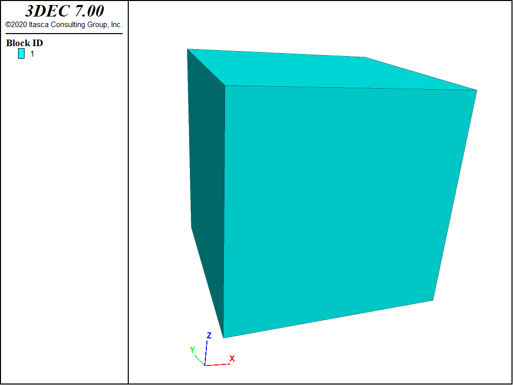
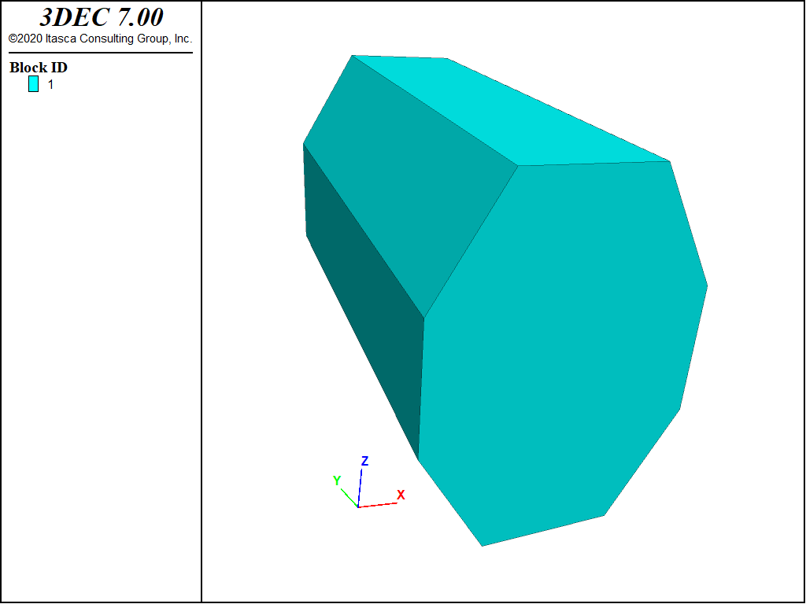
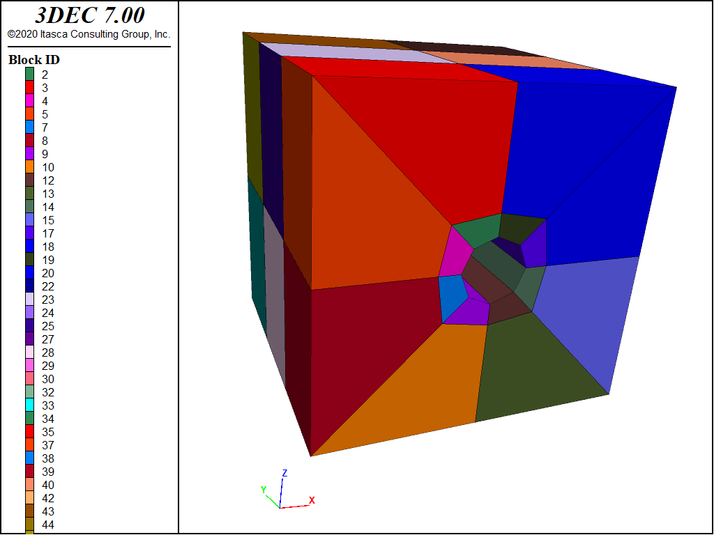

创建单个块体
3DEC 模型几何必须充分表示实际问题，以捕捉关注区域内与地质结构有关的主导机制。必须考虑以下方面：
- 应以多详细的程度表示地质结构（例如断层、节理、层面等）？
- 模型边界位置会怎样影响模型结果？
- 如果使用可变形块体，关注区域内需要多高的网格密度才能获得准确解？
这三个方面共同决定实际分析可采用的 3DEC 模型规模。
如上所述，建立 3DEC 模型有两个不同起点。第一种方法是定义一个简单初始形状，再将其切割，形成所需几何特征。第二种方法是定义复杂多面体形状，再拼合成连续体。这两种方法都使用 block create 命令。
3DEC 提供六种形式的 block create 命令：
- BLOCK CREATE polyhedron
- BLOCK CREATE brick
- BLOCK CREATE drum
- BLOCK CREATE prism
- BLOCK CREATE tunnel
- BLOCK CREATE tetrahedron
使用 创建多面体区块命令（block create polyhedron） 命令，几乎可以定义任意形状的多面体。每个面由顶点坐标列表定义。从多面体外部观察该面时，列表必须按顺时针顺序输入。面上所有点必须共面，而且 face 命令形成的多面体必须为凸体。允许续行，但单个顶点的坐标不能拆分到不同行。必须指定封闭多面体所需的全部面。下面是使用 BLOCK CREATE POLYHEDRON 命令生成边长为 1 个单位的立方体的简单示例：
使用 BLOCK CREATE POLYHEDRON 命令生成的立方体
model new
block create poly &
face 0,0,0 1,0,0 1,1,0 0,1,0 &
face 0,0,0 0,0,1 1,0,1 1,0,0 &
face 0,0,0 0,1,0 0,1,1 0,0,1 &
face 1,1,1 1,1,0 1,0,0 1,0,1 &
face 1,1,1 1,0,1 0,0,1 0,1,1 &
face 1,1,1 0,1,1 0,1,0 1,1,0
该示例创建的模型见图 1（Figure 1）。此处生成一个简单规则的直角实体。该命令也可创建复杂形状。由于需要大量输入，BLOCK CREATE POLYHEDRON 命令通常最好与外部前处理程序（例如 Griddle）配合使用。


图 1：使用 BLOCK CREATE POLYHEDRON 命令创建的立方体模型
如果问题区域为规则的六面“砖形”区域，创建砖块命令（block create brick） 命令提供了更简单的方法。brick 关键字的参数为实体的 x、y、z 坐标上下限，即区域在 x 方向从 xl 延伸至 xu，在 y 方向从 yl 延伸至 yu，在 z 方向从 zl 延伸至 zu。例如，要创建与图 1（Figure 1） 相同的模型，可使用命令：
使用 BLOCK CREATE BRICK 命令生成的立方体
model new
block create brick 0,1 0,1 0,1
注意，如果各方向尺寸相同，只需给出 x 范围。因此，上述命令可缩写为 block create brick 0,1。
创建鼓形区块命令（block create drum） 创建两端平行的鼓形块体。其功能类似 创建棱柱区块命令（block create prism），但命令语法更简单。
创建棱柱区块命令（block create prism） 命令是 BLOCK CREATE BRICK 命令的扩展，用于创建棱柱形多面体。棱柱的两个平行端面由任意数量的顶点定义，再自动连接两端面上相对应的顶点形成棱柱。第一个面（face-1）的顶点可按顺时针或逆时针顺序输入。相对面（face-2）的顶点必须与 face-1 上对应顶点采用相同输入顺序。面 1 和面 2 必须为平面凸多边形。图 2（Figure 2） 所示棱柱由下列命令创建：
model new
block create prism &
face-1 (0.0,0.0,0.0 ) (-0.5,0.0,0.87) (-0.5,0.0,1.87) (0.0,0.0,2.74) &
(1.0,0.0,2.74) ( 1.5,0.0,1.87) ( 1.5,0.0,0.87) (1.0,0.0, 0.0) &
face-2 (0.0,4.0,0.0 ) (-0.5,4.0,0.87) (-0.5,4.0,1.87) (0.0,4.0,2.74) &
(1.0,4.0,2.74) ( 1.5,4.0,1.87) ( 1.5,4.0,0.87) (1.0,4.0, 0.0)


图 2：使用 BLOCK CREATE PRISM 命令生成的八面体形棱柱
创建隧道区块命令（block create tunnel） 命令专门用于生成圆形隧道模型。该命令通过独立块体构建模型；相比之下，切割隧道命令（block cut tunnel） 命令是在已有块体中切出任意形状的隧道。用户只需指定隧道的方位、尺寸和所用块体数。如有需要，可通过 block cut 命令添加其他节理。例如，创建具有以下尺寸的隧道模型：
| radius | 2.0 m |
| 长度 | 20.0 m |
| 外边界 | 3.0 r |
| 倾角 | 水平 |
| 掘进方向 | 南 |
| 每个卦限中的块体数 | 1 |
| 环形块体 | 2 |
| 沿轴向的块体数 | 3 |
使用下列 BLOCK CREATE TUNNEL 命令。
使用 BLOCK CREATE TUNNEL 命令生成的隧道模型
model new
block create tunnel radius=2 length=-10,10 radius-ratio=3.0 ...
dip=0 dip-direction=0 ...
block-radial=2 block-tangential=1 block-axial=3
block delete range pos-x -2,2 pos-y -10,10 pos-z -2,2


图 3：使用 POLYHEDRON tunnel 命令创建的隧道模型
block create tet 命令通过指定四个顶点坐标创建四面体块体。顶点可按任意顺序列出。该命令通常用于从其他程序（或 3DEC 本身）导入或导出。
| 这些内容对您有帮助吗？… | FLAC3D © 2019, Itasca | 原文更新于 2020 年 10 月 8 日 |